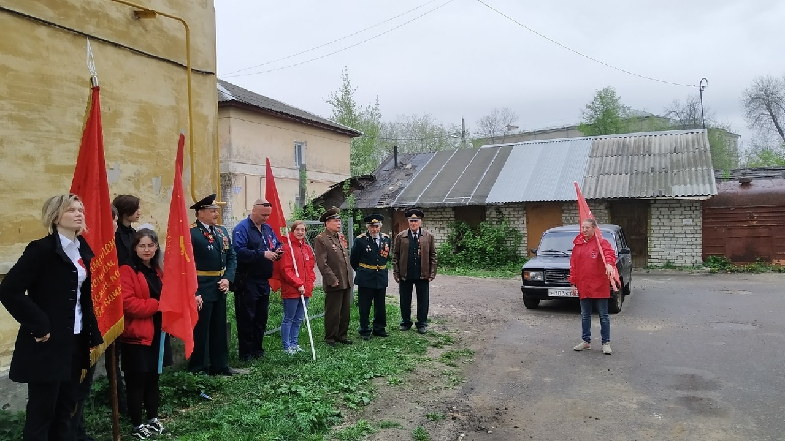
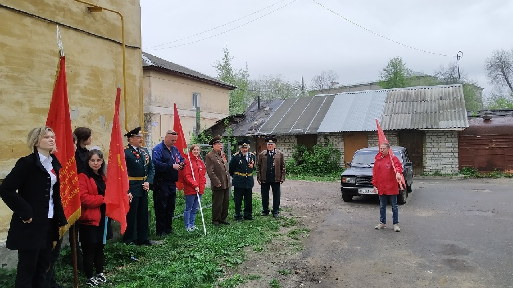

© 2021 МУРОМСКОЕ МЕСТНОЕ ОТДЕЛЕНИЕ КПРФ
Новости Местного отделения
Комсомольцы и коммунисты Мурома отметили День Победы
 

В условиях эпидемии и самоизоляции населения, коммунисты Мурома отметили 75-ю годовщину победы в Великой Отечестенной войне. После возложения цветов к памятнику "Неизвестного солдата" партийцы отпрвились к месту захоронения воинов, которые пали в боях за нашу свободу.
После традиционных мероприятий, совместно с комсомольцами, члены КПРФ посетили ветеранов Великой Отечественной войны. В этом году поздравления прошли в непривычной для всех форме коммунисты произносили слова благодарности у окон ветеранов, все это происходило на фоне песен военных лет.
КПРФ и ЛКСМ округа Муром за благоустрйство!

Ко Дню Победы комсомольцы Мурома восстановили памятник Советской власти.
Как повяжешь галстук, береги его!...
Муромские комсомольцы отметили день пионерии
20 мая комсомольцы города Мурома отметили День пионерии! В сложившейся ситуации сложно провести масштабное и интересное мероприятие для всей нашей большой семьи, но только не нам! 3 часа интеллектуальных конкурсов, 100500 шуток, победители и призёры самой масштабной интеллектуальной игры в Муроме! Все это - комсомол!
Мероприятие проходило в 7 этапов, каждый из которых имел свой формат, свой тайминг, свою тематику вопросов и загадок. Интересно было не только юным комсомольцам, но и депутатскому корпусу. Борьба была на равных, до последнего велась интрига победителей!
В командном зачете победу одержали: Гордилеев Никита, Казак Ольга, команда: SQWOZ BAB.
На второй строчке остановилась команда: “Гопатычи” с составом - Зарянкин Андрей, Язькова Эвелина.
В личном противостоянии победу одержал наш идейный вдохновитель: Пушкова Татьяна Сергеевна.